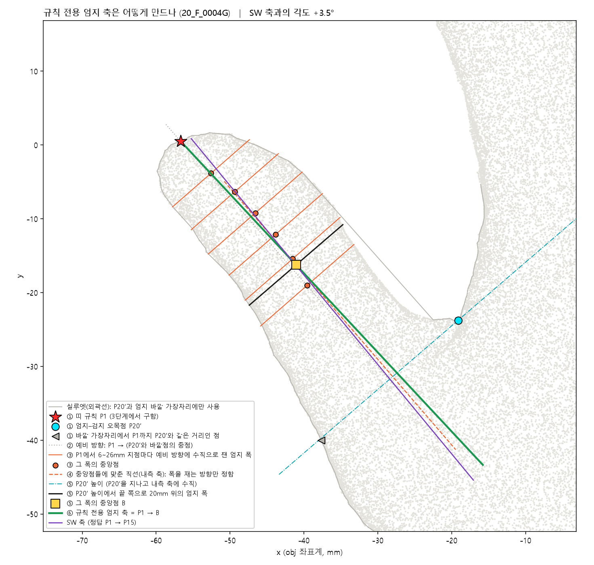
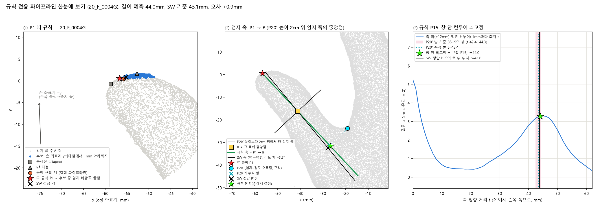
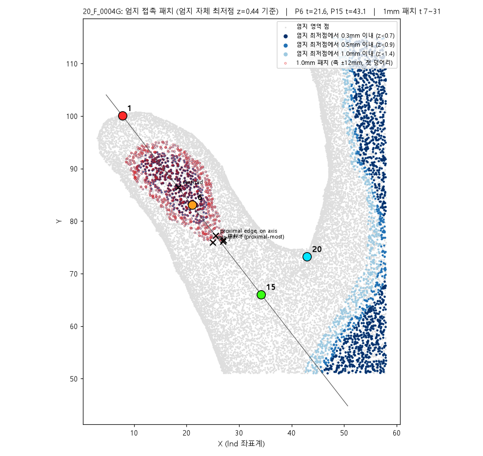

규칙 전용 엄지 길이 파이프라인 소개
손 3D 메쉬(obj) 하나만 넣으면 P1(엄지 끝)과 P15(엄지 밑 기준점)을 찍고 두 점의 xy 평면 거리 = 엄지 길이를 내는 알고리즘입니다. 앞서 만든 결합 파이프라인과 달리 학습 모델을 전혀 쓰지 않습니다. 모델 파일(29MB)도, 특징 캐시도 필요 없고, 우리가 데이터에 맞춘 상수도 없습니다(유일한 수치 상수 "오목점 2cm 위"는 특허 문구의 값). 실행: python thumb_model/predict.py hand.obj --mode rule
결과 (15명, 각자 처음 보는 손으로 평가). 엄지 길이 평균 오차 1.71mm(최대 4.1), 0.5mm 이내 4명, 1mm 이내 7명(2637은 정확히 1.0mm), 2mm 이내 10명. 학습 모델을 섞은 결합 파이프라인(1.68mm)과 사실상 같은 정확도이고, 목표 0.5mm에는 미달입니다. 어느 방법이든 같은 네 사람(1113, 1116, 1559, 1573)이 3~4mm 틀립니다.
1. 왜 규칙만으로 다시 만들었나
- 설명할 수 있다. 모든 단계가 "메쉬의 어느 점을 왜 골랐는지"로 말이 됩니다. 학습 모델은 15명으로 학습한 것이라 왜 그 자리를 찍었는지 설명하기 어렵습니다.
- SW 자체가 규칙 기반이다. 정답을 만든 SW는 특허 KR 10-1217207(손 실루엣에서 손가락 끝·오목점·축·기준점을 규칙으로 찍는 방법) 계열로 확인됐습니다. 같은 방식으로 재현하는 것이 자연스럽습니다.
- 가볍다. 모델 파일·특징 캐시 없이 메쉬만 읽어 바로 계산합니다.
- 맞춘 상수가 없다. 엄지 축은 특허의 손가락 축 규칙에서 끝점만 바꾼 것이고, 15명 데이터로 조정한 값이 하나도 없습니다.
2. 입력과 좌표계
입력은 스캔 메쉬 obj입니다. 유리판(바닥)이 z=0이고 손가락 방향이 대략 +y입니다. 파이프라인은 먼저 메쉬에서 손 좌표계를 스스로 만듭니다: 손목 중심을 원점으로, 손목 중심에서 가운뎃손가락 끝으로 가는 방향을 +y, 엄지 쪽을 +x로 둡니다. 3단계의 "y최대점"은 이 손 좌표계 기준입니다.
3. 파이프라인 단계
메쉬 읽기와 표면 점 만들기
obj의 정점(약 1.6mm 간격)에 표면 샘플(1mm²당 4개)을 더해 촘촘한 점구름을 만듭니다. 이후 모든 계산은 이 점들로 합니다.
외곽선에서 손가락 끝과 P20′ 찾기
손목 중심에서 방사형으로 훑어 실루엣을 얻고, 튀어나온 곳 5개 = 손가락 끝, 사이의 들어간 곳 = 손가락 사이 오목점. 엄지–검지 오목점이 P20′입니다(xy 오차 약 1.5mm).
외곽선에서 이후 단계로 넘어가는 것은 P20′과 엄지 바깥 가장자리뿐입니다. 외곽선의 엄지 끝점 자체는 3단계에서 엄지 끝 주변(25mm) 점들을 고르는 씨앗으로만 쓰이고, 축 계산에는 들어가지 않습니다.
P1 = 띠 규칙 new
엄지 끝 근처 점들 중 손 좌표계에서 y가 가장 큰 점부터 1mm 아래까지를 후보로 잡고, 그중 엄지 바깥쪽 끝점을 P1로 둡니다. SW의 P1은 엄지의 기하학적 끝(apex)에서 검지 쪽으로 약 2.8mm 치우쳐 있는데, 이 띠 규칙이 상수 없이 그 사이를 짚습니다. xy 오차 1.41mm.
엄지 축 = P1 → B new
P1에서 출발해 B를 만들고, P1과 B를 잇는 직선을 엄지 축으로 씁니다. ① P1에서 엄지 안쪽으로 가는 예비 방향(P1 → P20′과 바깥 가장자리 점의 중점)을 정하고 ② P1에서 6~26mm 떨어진 지점마다 그 방향에 수직으로 엄지 폭(양쪽 가장자리)을 재서 중앙점을 찍고 ③ 중앙점들에 직선(내측 축)을 맞춰 폭을 재는 방향을 확정한 뒤 ④ 그 방향 기준으로 P20′ 높이에서 끝 쪽으로 20mm 위에서 잰 엄지 폭의 중앙점 = B(아래 그림). 특허의 손가락 축 규칙(손가락 끝 → 오목점 2cm 위 폭 이등분점)에서 끝점을 띠 규칙 P1로 바꾼 것입니다. 외곽선 끝점에서 그으면(이전의 "중심선") 끝점이 엄지 바깥 모서리라 SW 축과 평균 5.2° 어긋나지만, 띠 P1에서 그으면 2.0 ± 2.3°로 줄어듭니다. 결합 파이프라인은 이 자리에서 학습 모델의 P15를 썼습니다.
밑면 컨투어와 P15
축을 따라 1mm마다 축 주변 ±12mm 안 점들 중 가장 낮은 z를 이어 "손바닥 밑면이 유리에서 얼마나 떠 있나" 곡선을 만듭니다. P20′을 축에 수직으로 내린 자리 ±1.1mm(각도로 85~95°) 안에서 이 곡선이 가장 높은 점 = P15. 결합 파이프라인의 규칙 P15와 같습니다.
엄지 길이 출력
길이 = P1과 P15의 xy 거리. 좌표(obj 좌표계), 길이, 확인용 PLY(P1 빨강, P15 초록, P20′ 하늘색)를 냅니다.


4. 어떻게 검증했나
채택 구성에는 데이터로 맞춘 상수가 없으므로 15명 각각을 그대로 예측한 값이 곧 "처음 보는 손" 성적입니다. 비교한 다른 구성 중 상수가 있는 것(이전안의 축 위 거리 t, 결합 파이프라인의 문턱값)은 LOO(leave-one-out), 즉 한 명을 빼고 나머지 14명으로 상수를 정한 뒤 뺀 사람을 예측하는 방식으로 평가해 같은 조건으로 맞췄습니다.
| 구성 (15명 held-out) | 길이 평균 오차 | 최대 | 0.5 / 1 / 2mm 이내 | P15 축 방향 편차(sd) |
|---|---|---|---|---|
| 규칙 전용 (채택): P1 띠 + 축 P1→B + P20′ 발 창 | 1.71mm | 4.1 | 4 / 7 / 10 | 2.06mm |
| 이전안: P1 띠 + 축 P1→중심선 위 t mm 지점 (t는 LOO 안에서 선택, 대개 20mm) | 1.74mm | 4.1 | 3 / 6 / 10 | 2.02mm |
| 이전안, t = 20mm 고정 (15명으로 고른 값이라 낙관적) | 1.61mm | 4.1 | 3 / 7 / 10 | 1.85mm |
| P1 중점 규칙 + 축 P1→P20′ 발 | 1.87mm | 4.2 | 3 / 5 / 8 | 2.18mm |
| 외곽선 끝점→B(이전 중심선)를 축으로 그대로 사용 | 2.37mm | 5.8 | 1 / 3 / 8 | 2.34mm |
| 참고: 결합 파이프라인 채택 (학습 + 규칙, gate 1.0mm) | 1.68mm | 4.6 | 3 / 4 / 11 | 1.84mm |
| 참고: 학습 모델만 | 1.95mm | 4.3 | 2 / 6 / 9 | 2.34mm |

사람별 오차(규칙 전용 채택, mm): 0004 +0.9, 0097 −0.8, 0179 +1.4, 2633 +0.3, 2634 +1.8, 2635 +2.4, 2636 −0.4, 2637 +1.0, 1113 −3.2, 1114 −0.5, 1115 −1.4, 1116 −4.1, 1117 −0.4, 1559 +3.3, 1573 +3.8.
5. 시도했지만 규칙이 되지 않은 것: P6
원래 계획은 P1 → P6(엄지 첫마디) → 그 연장선 위 P15의 3점 체인이었습니다. P6를 메쉬에서 찾는 규칙을 여러 가지로 시험했습니다: 엄지 밑면이 유리에서 떨어지기 시작하는 지점, 밑면 곡률이 가장 큰 지점, 그리고 타이어 접지면처럼 엄지 자체 최저점에서 0.3 / 0.5 / 1.0mm 이내 점들의 면(접촉 패치)의 손목 쪽 가장자리·중심·폭이 가장 넓은 자리 등. 어느 정의든 정답 P6와 ±2.5mm이고, 손마다 계통적으로 어긋납니다(어떤 손은 패치 가장자리, 어떤 손은 패치 한가운데).

report/contact_patch/.덤으로 알게 된 사실: SW의 P6는 P1–P15 직선 위에 거의 정확히 놓이고(옆 편차 0.3mm) 축 위 위치는 P1에서 P15까지 거리의 0.49 ± 0.03배, 즉 거의 중점입니다. 중점에서 벗어나는 손(1113, 1115, 1116, 1559, 1573)이 바로 P15가 안 맞는 손입니다. SW는 축을 먼저 정하고 세 점을 그 위에 놓는 것으로 보이며, P6는 P15를 찾는 데 새 정보를 주지 않습니다. 그래서 P6 없이 4단계처럼 P1 → B로 축을 만들었습니다.
6. 한계와 선택지
- 0.5mm는 안 됩니다. 1113·1116·1559·1573은 어떤 방법으로도 3~4mm 틀리고, 이는 노이즈가 아니라 SW가 메쉬에 없는 정보(원본 고해상도 스캔의 주름, 텍스처, 비공개 상수)를 썼다는 뜻입니다. 공급사에 기저점("첫째마디중심점") 정의를 문의하는 것이 가장 확실한 길입니다.
- 결합 파이프라인(1.68)과 규칙 전용(1.71)의 차이는 우연 범위입니다. 기본값을 어느 쪽으로 둘지는 정해지지 않았고, 현재
--mode combined가 결합,--mode rule이 규칙 전용입니다. - 축 각도 편향 +2.0°는 남지만 길이에는 거의 영향이 없습니다. 옆 방향 오차가 길이에 주는 영향은 2차항(2mm면 0.04mm)이고, 길이 오차는 P15의 축 방향 위치(sd 2.06mm)가 결정합니다. P15 좌표 자체가 필요하면 옆 오차 평균 1.5mm(최대 4.0)는 약점입니다.
- 새 P1 띠 규칙을 결합 파이프라인에 넣으면(P1 띠 + 학습 축 + gate 1.0) 15명 오차 1.51mm(4/7/10)로 시험한 210개 구성 중 가장 낮지만, 최선을 고른 값이라 낙관 편향이 있습니다. 자동으로 채택하지 않았습니다.
- B의 "2cm"는 특허 상수라 조정하지 않았습니다. 손 크기가 크게 다른 집단(어린이 등)에서는 다시 확인해야 합니다.
- 축을 더 줄인 판도 있습니다: SW 정답에서 P1→P20 선과 축의 각도가 14.6 ± 1.1°로 일정하다는 점을 이용해 "P1→P20′ 선을 14.6° 회전"을 축으로 쓰면 같은 정확도(1.70mm)에 재료가 P1·P20′·상수 하나뿐입니다. SW의 정답 축을 그대로 써도 1.83mm라 축은 더 이상 병목이 아니라는 실험과 함께 최단순 파이프라인 소개에 정리했습니다.
7. 용어 풀이
- apex
- 엄지 축 방향으로 가장 멀리 나간 메쉬 점. 엄지 끝의 기하학적 꼭짓점.
- 띠 규칙
- 손 좌표계에서 y최대점부터 1mm 아래까지의 점들 중 엄지 바깥쪽 끝점을 P1로 두는 규칙.
- B
- P20′ 높이보다 끝 쪽으로 20mm 위에서 잰 엄지 폭의 중앙점. 폭을 재는 방향은 P1에서 6~26mm 지점들의 폭 중앙점에 맞춘 내측 축에 수직. 특허의 "오목점 2cm 위 폭 이등분점".
- 중심선 (이전 정의)
- 외곽선의 엄지 끝점에서 B로 잇던 직선. 끝점이 엄지 바깥 모서리라 SW 축과 평균 5° 어긋나, 지금은 쓰지 않습니다.
- 수직 발
- 한 점(P20′)에서 직선(축)에 수직으로 내렸을 때 만나는 점.
- 띠 컨투어
- 축 주변 ±12mm 띠 안에서 1mm마다 가장 낮은 z를 이은 곡선. 손바닥 밑면이 유리에서 뜬 정도.
- 접촉 패치
- 엄지 밑면 중 자체 최저점에서 z 1mm 이내인 점들의 면. 유리에 닿은 영역.
- LOO
- 한 명씩 빼고 평가하는 교차검증. 15명 전원이 처음 보는 손으로 평가됨.
- obj 좌표계
- 스캔 메쉬의 원래 좌표. 바닥(유리)이 z=0, 손가락 방향이 +y.
관련 파일: thumb_model/final_pipeline.py(파이프라인·평가, --eval; 축 이름 p1_to_B), thumb_model/final_config_rule.json(채택 설정), thumb_model/predict.py --mode rule(실행), thumb_model/rule_pipeline.py(외곽선·P20′·폭 측정), thumb_model/final_pipeline.py의 thumb_B(B), thumb_model/thumb_views.py(컨투어), thumb_model/p15_foot_window_views.py(창 규칙), thumb_model/contact_patch_views.py(접촉 패치), thumb_model/axis_explainer.py(축·B 그림), thumb_model/rule_only_explainer.py(3단계 그림). 상세 수치는 align2_and_modeling_readme.md의 "학습 없는 규칙 전용 파이프라인" 절, 결합 파이프라인 소개는 final_pipeline_overview.html.